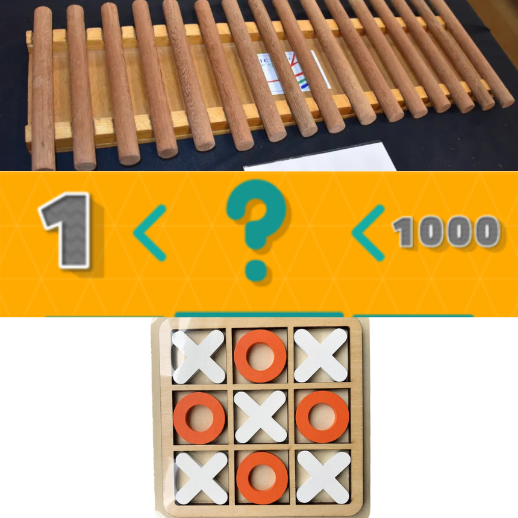
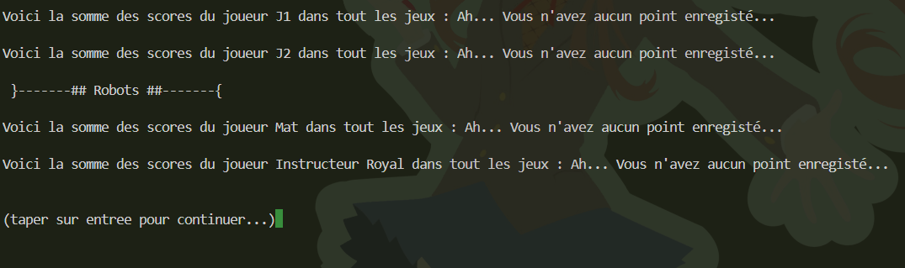
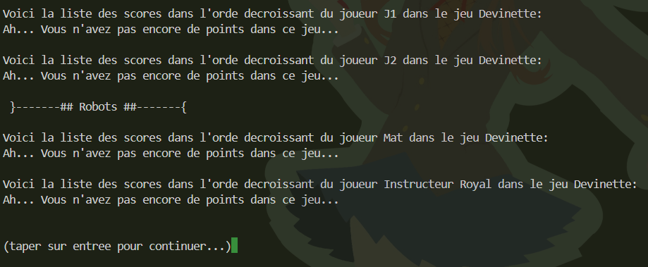
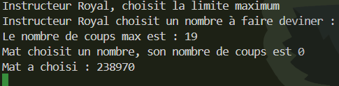
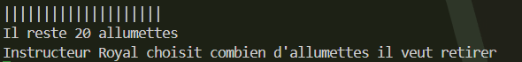
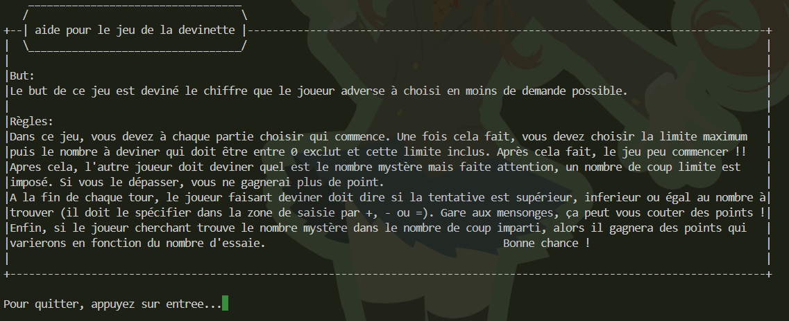
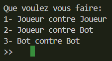

Projet Deux : Mini-Jeu

Dans le cadre d'une SAE en 1ère année de BUT Informatique, nous avons recréé Quelques mini-jeux en Python sur terminal.
Nous devions réaliser trois jeux et un menu en langage python :
-
Avant de commencer, les joueurs doivent se créer un compte ou se connecter s'ils en ont déjà un. Les informations des joueurs sont stockées dans un fichier "joueurs.txt" pour permettre la persistance des données entre les sessions de jeu.

- Le menu devait permettre de choisir entre les trois jeux, afficher les scores totaux de chaque joueur et enregistrer les sessions précédentes dans un fichier à part.

- Sur le menu, nous devons pouvoir voir les scores Totaux de chaque joueur: 
- Et aussi de voir les scores de chaque joueur pour le jeu sélectionné: 
-
Pour les jeux, nous devions faire :
- Le jeu des devinettes où un joueur/ordinateur doit deviner un nombre choisi aléatoirement par l'ordinateur ou un autre Joueur avec un nombre limité d'essais.
 image pendant le jeu des devinettes:
image pendant le jeu des devinettes:
 - Le jeu des allumettes où deux joueurs/ordis s'affrontent pour éviter de prendre la dernière allumette.
 - Le jeu du morpion où deux joueurs/ordis s'affrontent pour aligner trois de leurs symboles sur une grille 3x3.

- Le jeu des devinettes où un joueur/ordinateur doit deviner un nombre choisi aléatoirement par l'ordinateur ou un autre Joueur avec un nombre limité d'essais.
-
Pour chaque jeu, nous avons implémenté un fichier d'aide qui explique les règles et les commandes nécessaires pour jouer.
Exemple d'aide pour le jeu des devinettes:
 -
Nous devions également implémenter des bots pour jouer contre l'ordinateur dans chaque jeu.
Exemple de menu pour choisir de jouer contre un bot ou un autre joueur:
